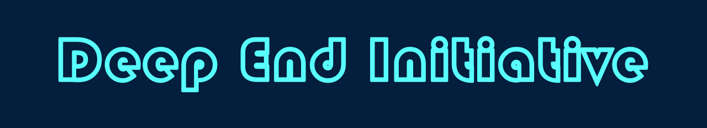
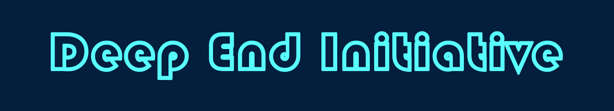

.png) 

What’s the Deep End Initiative's Mission? The goal of the Deep End Initiative is to encourage critical thinking and metacognition, the drive to know more, through showcasing and explaining significant literature and art, as well as providing advice on one’s journey toward a more thoughtful mindset. The world in which we live today is a complex place, located in a complex time. No matter where one may look, there are agendas and perspectives being pushed, shoved down our throats at every turn. In every advertisement, political speech, movie, or unassuming poster on a wall, there is a narrative that someone wants you to buy into. Amidst this cyclonic chaos of ever-shifting, advertised madness, it is easy to lose our way, our perspectives becoming skewed or hazy in the jumbled mix of audacious opinion. It is our belief that, despite how distorted the world may get, it is always one’s duty to seek out the truth in things, though that seems to rarely happen. With the emergence of the technological age, we’ve become obsessed with the concept of convenience, which seems to have led us also into an era of outright complacency. Through this complacency, we may choose to remain in our skewed perceptions for the sake of comfort, rather than choosing to branch out and seek what is clear. This ignorance, a willful lack of care, is exceptionally damaging to not only ourselves, but the people and societies around us. How can we discern truth from lie, or see the symbolic depth in the things around us if we never care to look in the first place? The purpose of the Deep End Initiative is to spur individuals toward active thinking in order to break that cage of complacency they may have become accustomed to. As the desire for the quick, efficient, and convenient continues to grow and expand, we choose to advocate for the good, the true, and the beautiful. We believe that if you’re unable to understand the nuances of literature and art, then you’re just as unable to fully understand and appreciate the wide world around you. Not only that, but by assuming the role of an ignorant bystander, many distance themselves from real world issues that need attention, and so we created the Deep End Initiative to educate against this mindset, and encourage individuals to not only see the deeper meanings of things, but to begin making things with meaning for themselves. To become advocates, to give themselves a voice, to make change in their portion of the world.